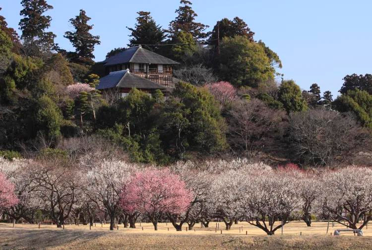

Japão: o país dos animes.
O que fazer no Japão em Fevereiro?
Alto astral no fim do inverno
Com as temperaturas mais baixas do ano, o mês de fevereiro pede corpo em movimento e várias camadas para se manter aquecido. Os eventos da temporada celebram um desses dois tópicos: o clima de inverno, no popular festival da neve de Sapporo, ou energia total, em eventos como oTemplo Saidaiji Eyo (festival do homem nu). Os esportes de inverno são uma forma comum e popular de aproveitar um fim de semana com neve. Durante o mês, as condições da pista são melhores que o normal nas principais áreas de esportes de neve do Japão.
O que saber antes de viajar
- Embora seja incomum, a neve pode cair em Tóquio e em outras áreas urbanas, tais como em Osaka e Hiroshima; então, use calçados adequados.
- Hokkaido, Nagano e Niigata estão entre os destinos mais populares para os esportes de neve
- O festival da neve de Sapporo atrai multidões, e por isso é bom garantir suas reservas com antecedência
Arte e paisagem com neve nas regiões frias do Japão em fevereiro
Uma nova estação?
Uma parcela significativa da identidade japonesa baseia-se no conceito das quatro estações do ano. Primavera, verão, outono e inverno – todas operando conforme o programado no decorrer da história. Curiosamente, o calendário tradicional japonês marca o início da primavera no dia 4 de fevereiro. Mas não se engane: o Japão ainda é muito frio nessa época (e com muita neve em alguns lugares), e por isso você precisa de roupas adequadas.
Eventos de inverno para aquecer a alma
Estrela incontestável dos eventos japoneses de inverno, o festival da Neve atrai mais de um milhão de visitantes por ano. A grande variedade de esculturas de gelo são a atração principal, mas a diversão não para por aí. Comidas e bebidas estão disponíveis em diversos quiosques, mantendo os ânimos aquecidos conforme as temperaturas caem. Sem dúvida o maior dos festivais temáticos inverno do Japão, o Festival da Neve de Sapporo atraí 2 milhões de visitantes todo ano. Festivais similares (e menos lotados) são o Festival Akita Yokote Kamakura, o Festival de Neve Tokamachi de Niigata e o Festival de Lanternas de Neve do Castelo de Hirosaki em Aomori.
À luz de velas de neve no festival de Yokote Kamakura, em Akita
Para algo completamente diferente, confira o Templo Saidaiji Eyo em Okayama . Imagine a cena: dezenas de homens de tanga tentando achar um palito em bandeja que passa de mão em mão – algumas coisas realmente precisam ser vistas. Prepare-se para colisões, drama, reveses de fortuna em velocidade relâmpago e muitos corpos nus por toda parte. Isso sim é entretenimento!
O melhor do esqui
O Japão é um país montanhoso e com nevascas significativas, e por isso você pode encontrar estações de esqui por todo o país. Mas Hokkaido é uma espécie de sinônimo de esqui japonês. Não é difícil entender o porquê: Niseko e os resorts próximos de Rusutsu e Kiroro são consideradas as melhores áreas de esqui do Japão. Neve em pó de alta qualidade, corridas longas e muitas opções fora da pista contribuem para esse prestígio.
Pistas frescas e vistas panorâmicas em Rusutsu
Êxtase alpino na região central do Japão
A alta altitude da província de Nagano e sua cultura esportiva fizeram dela uma escolha natural para as Olimpíadas de Inverno de 1998. Com vários resorts famosos, incluindo o Hakuba Happo-one (que tem pistas de qualidade olímpica), Hakuba atrai um grande número de esquiadores do exterior. Já no nordeste da província, a Região de Shiga Kogen possui uma incrível variedade de resorts, todos inclusos com um único passe de acesso total. Até os membros da família real japonesa escolhem essa área para esquiar. Na costa noroeste, Niigata é o lar de grandes resorts como o Myoko Suginohara e o Akakan, ambos dignos de visita.
Evitando o frio
Os alérgicos ao frio do inverno podem escolher entre várias alternativas em ambientes fechados. As performances artísticas tradicionais do Teatro Kabukiza , em Ginza, garantem entretenimento em um ambiente aconchegante. Se isso não for quente o bastante, você pode mergulhar nas águas naturalmente aquecidas de um resort de águas termais – uma tradição japonesa dos dias frios.
Kusatsu, em Gunma, é um popular refúgio de águas termais
Outra opção é buscar temperaturas mais altas no sul. Okinawa inicia sua temporada de cerejeiras em flor no início de fevereiro, com temperaturas variando de 15 a 20 graus. Mais perto do continente e facilmente acessada por shinkansen, a ilha de Kyushu é relativamente temperada e abriga uma das cidades de Onsen mais famosas do Japão, Beppu .
Kagoshima, no extremo sul de Kyushu
O início da primavera
Apesar do frio, fevereiro tem aquela energia crescente de renovação. Na segunda metade do mês, que é relativamente mais quente, as ameixeiras florescem anunciando o início oficial da primavera. O jardim Kairakuen em Ibaraki , o Koishikawa Korakuen em Tóquio , o santuário de Kitano Tenmangu em Quioto e o santuário de Dazaifu Tenmangu em Fukuoka são os melhores locais para ver as flores.
